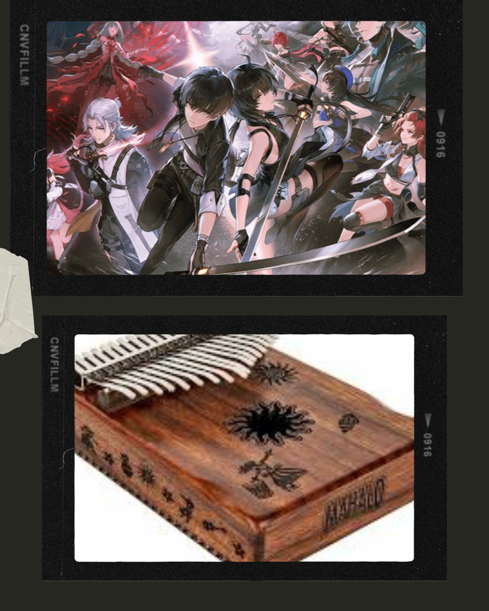
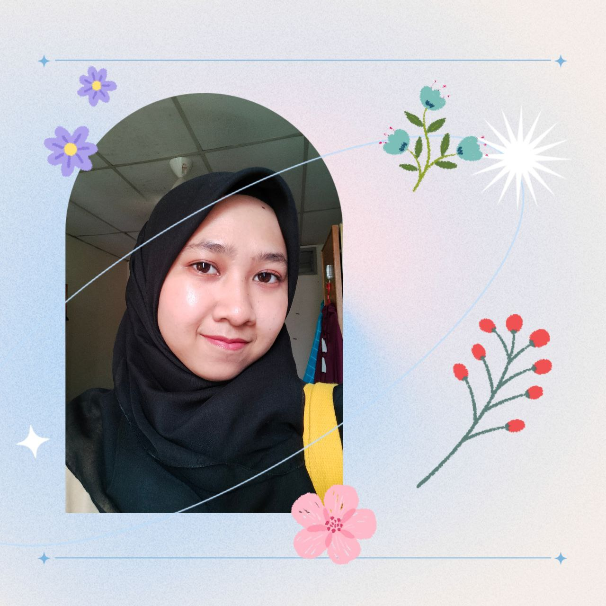
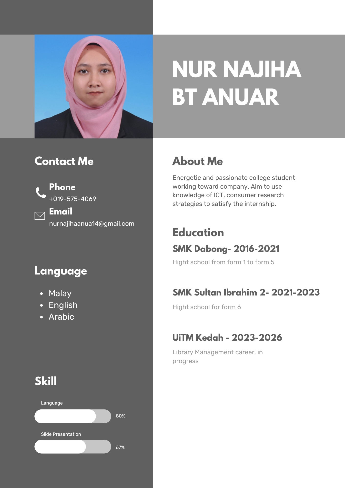

<html>
<body>
</body>
</html>
<!DOCTYPE html>
<head><title>My Biodata</title></head>
<body>
<header>
<style>
     body{
	  background-image:url("wallpaper2.png");
	  background-repeat: no-repeat;
	  background-attachment: fixed;
	  background-size: cover;}
</style>

<head>
<meta name="viewport" content="width=device-width, initial-scale=1">
<style>
body {
  margin: 0;
  background-color: #f1f1f1;
  font-family: Arial, Helvetica, sans-serif;
}

#navbar {
  background-color: #445688;
  position: fixed;
  top: -50px;
  width: 100%;
  display: block;
  transition: top 0.3s;
}

#navbar a {
  float: left;
  display: block;
  color: #f2f2f2;
  text-align: center;
  padding: 15px;
  text-decoration: none;
  font-size: 17px;
}

#navbar a:hover {
  background-color: #8E80CF;
  color:black;
}
</style>
</head>
<body>

<div id="navbar">
<td><a href="index.html">Home</a></td>
<td><a href="my_biodata.html">My Biodata</a></td>
<td><a href="my_family.html">My Family</a></td>
<td><a href="my_education.html">My Education</a></td>
<td><a href="my_gallery.html">My Gallery</a></td>
<td><a href="other.html">Other</a></td>
</div>

<div style="padding:15px 15px 100px;font-size:30px">
 </div>

<script>
// When the user scrolls down 20px from the top of the document, slide down the navbar
window.onscroll = function() {scrollFunction()};

function scrollFunction() {
  if (document.body.scrollTop > 20 || document.documentElement.scrollTop > 20) {
    document.getElementById("navbar").style.top = "0";
  } else {
    document.getElementById("navbar").style.top = "-50px";
  }
}
</script>

<h1 style="font-size:50px; text-align:center;">About Myself</h1>

<center><p style=font-size:20px; margin-bottom:50px;">I am Nur Najiha Binti Anuar a student from Uitm Kedah.
<br>Currently studying library management and this is my personal website.
<br>I make this website for this individual assignment of subject IML470</p></center>
</header>
<h1>
<h1 style="background-color: #D9B3F2; font-family:broadway; text-align:center; color: black;">My Biodata</h1>
<ul>
<p><h3 font-family:Broadway;">Click on the play button to play a sound:</h3></p>
<audio controls>
        <source src="lagu2.mp3" align="right" type="audio/mpeg">
      </audio>
<center></center>
<p>
<h3 style="font-family:Cooper Black;">My name is Nur Najiha Binti Anuar, born on 14 November 2003 in Hospital Lati Pasir Mas. Growing up in Pasir Mas, Kelantan, I have been shaped by the vibrant culture and rich traditions of my community. I am major in Library Management and is my two semester at the University Teknologi Mara Kedah. I currently reside at Banggol Ara, in the bustling city of Pasir Mas, Kelantan. I love playing games such as Mobile Legends, PUBG, and Wuthering Wave I also learned to play the kalimba. I am not very good but I just love playing at home with my family. I have one big sister, one big brother, and a younger brother. We love to sit around in the living room after dinner and we will play games together.
</p>
<center>
</center>

<p>In my free time, I love helping my mom to make kuih and cake such as kuih golek bulu or it called as onde-onde. We make it during the fasting month to prevent from buying at the market because sometimes the kuih is not good or gula melaka don't have that many compared to kuih that we make. I to helping my father to watering all plant at home, we have more then 20 plant at home such as orchid, frangipani, lotus and more. I to help him to feed the chicken when he can not feed them because of his work at school.</h3>


<h1 style="background-color: #C7B6EA; font-family:broadway; text-align:center; color: grey;">This Is My Resume</h1>


<center></center>

<center><h2><a href="#top"> SCROLL TO TOP </a></h2></center>
<p><strong>Made with love<3</p>
<hr>
<footer>
Copyright &copy; About Myself 2024-2025


</body>